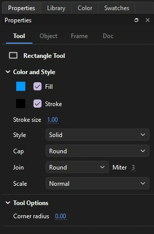
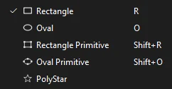
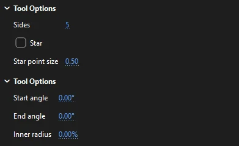
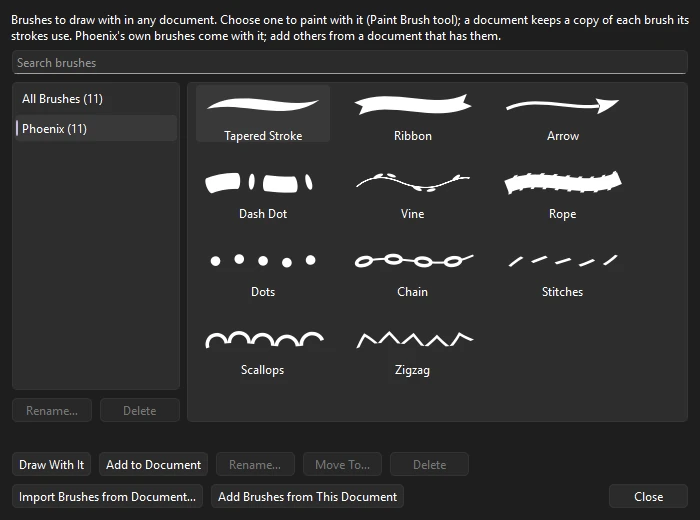
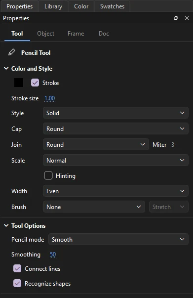
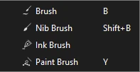
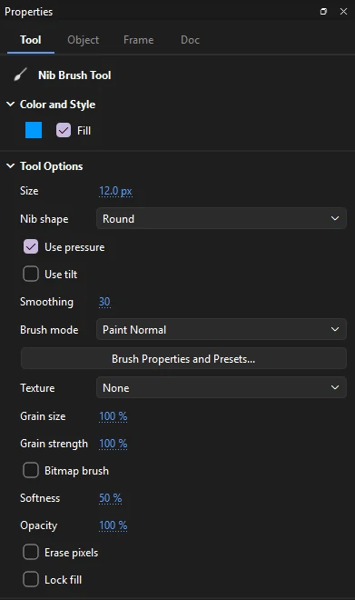
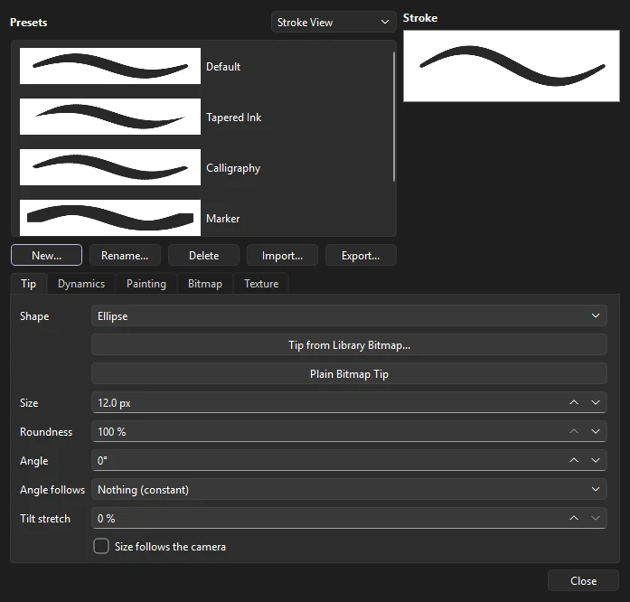
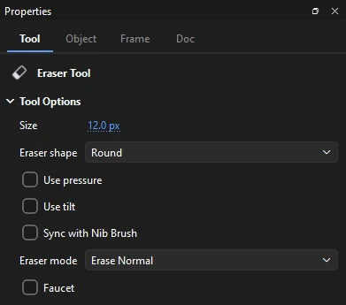
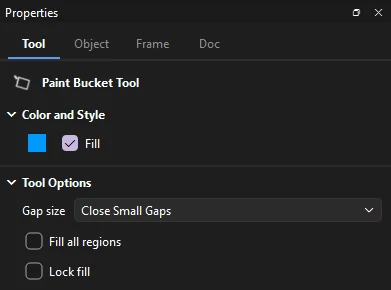

Drawing
Drawing tools
Every tool's settings live on the Properties panel's Tool tab, which appears when you pick the tool. The panel stays on the Tool tab while you draw, even though the shape you just drew is selected; it switches to the Object tab only when you select something with a selection tool. Phoenix remembers the brushes' settings and the Eraser's nib between sessions; the other tools keep their settings until you quit and start from their defaults next time.
Whether new artwork merges with what is beneath it or stays an object of its own is set by Object Drawing (J), the button under the colors in the toolbox. See Drawing models. Snapping to the grid, guides and objects, set in the View menu, applies to the shape tools, the Line and the Pen; see Grid and snapping.
Color and style
Tools that draw show a Color and Style section at the top of the Tool tab:
- Fill and Stroke
- The colors to draw with, the same ones as the swatches in the toolbox. Click a swatch to pick a color; uncheck either one to draw without it, for example a rectangle with no outline. Each tool shows only what it draws: the shape tools and Pen show both, the brushes and Paint Bucket only the fill, and the Line, Pencil, Paint Brush and Ink Bottle only the stroke and its style.
- Stroke size
- Line thickness, from 0.1 to 200 pixels.
- Style
- Solid, Hairline (always one screen pixel wide), Dashed, Dotted, Ragged, Stipple or Hatched. The ... button beside it opens Custom Stroke Style for the stroke's kind, weight and the kind's own settings, such as dash length, or a paint brush and its options.
- Cap
- How open line ends look: Round, None (flat at the end point) or Square.
- Join
- How corners look: Round, Miter or Bevel. For Miter, the Miter limit beside it stops very sharp corners from spiking.
- Scale
- Whether the stroke thickens when the artwork is scaled: Normal (it does), Horizontal, Vertical, or None (it stays the same width).
- Hinting
- Marks the stroke for pixel hinting. It is saved with the stroke for players that snap thin lines to whole pixels; Phoenix draws the stroke the same either way.
- Width
- How the width varies along the stroke: Even, Taper Both Ends, Taper Start, Taper End, Swell or Pinch. A stroke shaped with the Width tool shows Custom.
- Brush
- A graphic symbol from the library drawn along the stroke instead of a line, set to Stretch (an art brush: the symbol bent from one end of the stroke to the other) or Repeat (a pattern brush: copies of it one after another along the stroke). The stroke size scales the symbol across the stroke.

Pen tools
The Pen tool slot holds four tools for drawing and editing precise paths.
Pen
Press P. The Pen draws a path one point at a time.
| Do this | To |
|---|---|
| Click | Place a corner point |
| Drag | Place a smooth point and pull out its curve handles |
| Alt-drag | Break the handles so the curve can change direction sharply |
| Shift | Keep the segment or handle at a multiple of 45° |
| Click the first point | Close the path; a closed path gets a fill |
| Enter, double-click or Ctrl-click | Finish an open path, drawn as a stroke only |
| Click the last point again | Retract its outgoing handle, so the next segment leaves it as a corner; drag from it to pull a new handle on that side alone |
| Esc | Abandon the path |
| Press on the end of an open path | Carry on drawing from there: any open path's loose end on the frame, or either end of the selected shape's path |
| Finish on the end of another open path | Join the two into one path |
| Click a segment of the selected shape | Before starting a path: add a point there |
| Click a point of the selected shape | Before starting a path: remove that point |
The cursor shows what the next click will do: start a new path, carry on a path, close it, or add or remove a point. If you switch tools in the middle of a path, Phoenix keeps what you have drawn as an open path. A path closed by clicking its first point gets the fill color; an open path is drawn as a stroke only, whatever the fill is set to. With both fill and stroke turned off, the path is drawn as a hairline so that it isn't invisible.
While you draw, the Pen shows the next segment stretching from the last point to the cursor, and draws its points as small white squares; the first point turns yellow when a click there would close the path. Turn the preview off, or draw the points filled in blue, under Pen in Preferences. When snapping is on, points snap to the grid, guides and objects, and line up with the points already placed in the path.
Add, Delete and Convert Anchor Point
- Add Anchor Point (=)
- Click a path to add a point without changing its shape.
- Delete Anchor Point (-)
- Click a point to remove it. The curve is refitted so it keeps its shape as closely as it can.
- Convert Anchor Point (Shift+C)
- Click a smooth point to make it a corner, or drag from a corner to pull out curve handles.
To move points and handles, use the Subselection tool.
Line
Press N and drag to draw a straight line. Hold Shift to keep it at a multiple of 45°. The Line draws only a stroke, in the stroke color, size and style on the Tool tab; its ends snap when snapping is on, and with Snap to Objects on, a small ring at the cursor grows when the end has snapped (the shape tools show the same ring). Lines drawn in merge drawing cut the artwork they cross, so a line across a shape splits its fill in two.
Width tool
Press U for the Width tool, which has a toolbox slot of its own, and shape a stroke's width by hand:
- Drag out from a stroke to make it wider there, or in toward its middle to make it thinner. This places a width point, and the width eases smoothly between points.
- Drag a width point's handles to change it. Hold Alt to change only the side you drag.
- Click a width point and press Delete to take it away.
The width belongs to the stroke's style, so strokes of the same style in one shape change together. Each drag is a single step to undo.
Shapes and primitives
One toolbox slot holds the shape tools. Press and hold it to choose one, or press its key.

| Tool | Key | Notes |
|---|---|---|
| Rectangle | R | Shift draws a square, Alt draws from the center. While dragging, press ↑ and ↓ to round the corners one pixel at a time (with Shift, ten). Corner radius sets the rounding before you draw; it is never more than half the shorter side. Alt-click without dragging to type the width, height and corner radius instead. |
| Oval | O | Shift draws a circle, Alt draws from the center. Alt-click without dragging to type the width and height. |
| Rectangle Primitive | Shift+R | A rectangle whose four corner radii stay editable. Draws like the Rectangle, with the same keys. |
| Oval Primitive | Shift+O | An oval with an editable start angle, end angle and inner radius, for pie slices and rings. Set them before drawing with Start angle, End angle and Inner radius. Draws like the Oval, with the same keys. |
| PolyStar | Drag out from the center; the drag sets the size and which way it points. Set the number of Sides (3 to 32), and check Star to draw a star; Star point size sets how deep its points are, from long and thin near 0 to a plain polygon at 1. Shift turns it in 45° steps. |
The Alt-click dialog, Rectangle Settings or Oval Settings, also has Draw from center, which places the click at the middle of the shape instead of its top-left corner. It remembers the last size you typed. The plain Oval has no start or end angle; for a pie slice or ring, use the Oval Primitive.

- Start angle and End angle
- Where the oval primitive's arc begins and ends, in degrees clockwise from three o'clock. The same angle for both, such as 0 and 0, draws the whole oval.
- Inner radius
- A hole in the middle, as a percentage of the oval's size, from 0 to 99. With angles, it makes a ring segment.
The PolyStar's options are shown above the Oval Primitive's here; each tool shows only its own.
Editing primitives
Select a primitive with the Selection tool and the Object tab shows its options:
- Rectangle Options: the radius of each corner, with Lock corners together to change all four at once.
- Oval Options: Start and End angle, Inner radius as a percentage, and Close path.
- Reset returns the options to a plain rectangle or full oval.
To edit a primitive's points freely, break it apart first (Ctrl+B).
Paint Brush
Press Y and draw freehand to paint with an art or pattern brush. The Paint Brush shares a slot with the brushes. It draws a stroke, so its Tool tab shows the stroke color and style but no fill. Choose the brush under Brush on the Tool tab, or in the Brush Library. The stroke is fitted like a pencil line, in the Pencil mode and Smoothing you set. To give a stroke already drawn a brush, select it and choose one under Brush on the Object tab.
The Brush menu shows each brush with a picture of its stroke: the document's own paint brushes under Brushes in this document, then the Brush Library's by category, then the library's graphic symbols. An art brush stretches its art from one end of the stroke to the other; a pattern brush repeats its tile along the stroke. The stroke size is the art's height across the stroke. Art drawn in black and grays takes the stroke color (black becomes the color, lighter grays its tints); art in colors of its own keeps them. Any graphic symbol in the library can be a brush too, such as a leaf, a rope or a chain link, with Stretch or Repeat beside it.
A brush from the Brush Library is copied into the document the first time a stroke is drawn with it, and from then on it is one of the document's brushes. Strokes drawn with paint brushes are saved the way FLA files store them, with the brushes they use, so they keep their brush when the file is opened elsewhere. Copying strokes, frames or symbols to another document takes their brushes along: a brush the other document has already is used as it is there, and one it lacks comes in with them.
With a pen, how hard you press sets the stroke's width as you draw, between the brush's narrowest and widest (its options in Custom Stroke Style), and leaning the pen over narrows it toward the brush's width for a leaning pen. The width is kept as the stroke's width profile, which the Width tool can reshape afterwards; a paint brush stroke never draws wider than the brush's widest.
Where a stroke turns a sharp corner, a pattern brush turns it as its Corners option says: Auto-centered bends a tile round the corner; Auto-between fits the tiles to each side so they meet at the corner, folded into it; Auto-sliced cuts the tiles of the two sides along the corner's bisector, like the mitered sides of a picture frame; and Auto-overlap runs each side's tiles on past the corner so they overlap there. An art brush with Bend round corners on bends its art round a sharp turn; with it off, the art is mitered at the turn and folds over itself on the inside of a tight one.
Making your own brush
Any graphic symbol can be a brush. Draw the art, convert it to a graphic symbol (F8), then choose the symbol under Brush on the Tool tab and set Stretch to bend one copy along the whole stroke, or Repeat to lay copies end to end. Draw the art lying along the horizontal: its left-to-right runs along the stroke, and its height lies across it. At a stroke size of 1 the art keeps its own height; a size of 2 doubles it. A symbol brush draws in the symbol's own colors, not the stroke color. Editing the symbol changes every stroke drawn with it.
To bring in finished art and pattern brushes, import them from a document that has them into the Brush Library. To change how a brush fits, spaces its tiles or turns corners, use its options in Custom Stroke Style, and keep the result as a new brush if you like. Phoenix has no command that turns selected artwork straight into an art or pattern brush.
Brush Library
holds brushes to draw with in any document, filed by category, each with a picture of its stroke. Search by name above the lists. Double-click a brush, or choose it and click Draw With It, to paint with it at once with the Paint Brush; Add to Document copies it into the document without drawing. The library stays open beside the stage while you draw.

Phoenix comes with a few brushes of its own, under Phoenix: art brushes (Tapered Stroke, Ribbon, Arrow, Dash Dot, Vine and Rope) and pattern brushes (Dots, Chain, Stitches, Scallops and Zigzag). To add more, click Import Brushes from Document... and choose an FLA, XFL or Phoenix document that has paint brushes, or click Add Brushes from This Document for the one that is open. Each brush is filed under a category from its name (Arrows, Ink, Floral, Text Dividers and so on); a brush the library has already is left out. Your brushes are kept in Phoenix's settings folder and are there in every session. Rename..., Move To... and Delete change one of them, and the buttons under the categories rename or delete a whole category; Phoenix's own brushes stay as they are. Deleting a brush from the library does not change documents that use it: each keeps its own copy.
Document Brushes
lists the document's paint brushes, used or not, and the graphic symbols its strokes are drawn with, each with a picture, its kind and how many strokes use it. Draw With It makes one the brush for new strokes. Select Strokes selects what on the current frame is drawn with it. Rename... gives a paint brush another name, and Add to Brush Library keeps it in the Brush Library for other documents. Take Off Strokes turns the strokes that use it into plain lines of the same color and weight, and Remove Unused takes the paint brushes no stroke uses out of the document.
Pencil
Press Shift+Y and draw freehand. Phoenix shows how your line will be fitted as you draw, and fits it when you release.

- Pencil mode
- Smooth rounds your line into flowing curves. Straighten turns it into straight segments and clean arcs. Ink keeps it close to exactly what you drew.
- Smoothing
- 0 to 100. Higher values remove more wobble and use fewer points. Ink mode keeps close to your line whatever the smoothing.
- Connect lines
- In Straighten mode, closes a stroke whose ends nearly meet. How near they must be is the Connect lines setting in Preferences.
- Recognize shapes
- In Straighten mode, turns a rough rectangle or oval into a true one.
Start a stroke on the end of a selected open path to extend it. Hold Shift to draw a straight line across or down: the first few pixels of movement choose which. The Pencil draws only a stroke, in the stroke color and style on the Tool tab. The Paint Brush fits its strokes with the same Pencil mode and Smoothing settings.
Brushes
The brush slot holds three brushes that paint fills: the Brush (B), the Nib Brush (Shift+B) and the Ink Brush, which has no key until you give it one. It also holds the Paint Brush (Y), which draws strokes. The three fill brushes paint filled shapes in the current fill, solid, gradient or bitmap, use your tablet's pen pressure, and keep their own settings. Hold Shift to paint a straight stroke across or down.


Brush
A brush whose width responds to pressure and speed, with tapered ends.
- Size
- 1 to 200 pixels.
- Pressure
- Lets pen pressure vary the width, down to Min size as a percentage of the full size.
- Velocity
- None, Thin to thick, or Thick to thin: how drawing speed changes the width.
- Taper start / end
- How far each end narrows to a point, 0 to 50%.
- Smoothing
- How much hand wobble is removed.
- Precision
- How closely the final shape follows the stroke, against how many points it uses.
- Roundness and Angle
- The shape of the tip: lower roundness gives a flat, calligraphic nib turned to the angle.
Nib Brush
A brush with a shaped nib, set by Size and Nib shape: Round, Oval, Square, Rectangle, Vertical line, or one of two diagonals. Use pressure lets pen pressure vary the width, Use tilt turns the nib the way the pen leans, and Smoothing takes out hand wobble.
Ink Brush
A brush for confident inked lines, unique to Phoenix. Besides Size, Smoothing and Precision, it has:
- Stabilizer
- 0 to 60 pixels. The line trails behind the cursor as if pulled on a string, which irons out shaky strokes. Higher values give smoother, slower lines.
- Pressure
- Soft, Linear or Firm: how quickly the line reaches full width as you press harder.
- Min size
- The width at the lightest pressure, as a percentage of the size.
- Tilt shading
- Tilting the pen broadens the line, like the side of a brush.
Brush modes
The three brushes share a Brush mode that limits where paint lands. Lock fill, also on the brushes' Tool tab, works as it does for the Paint Bucket.
| Mode | Paints |
|---|---|
| Paint Normal | Over everything on the layer |
| Paint Fills | Over fills and empty areas, leaving strokes on top |
| Paint Behind | Only on empty areas, behind existing artwork |
| Paint Selection | Only inside the selected fill |
| Paint Inside | Only inside the fill where the stroke starts |
| Repaint | Only over fills already there, recoloring them; nothing lands on empty areas |
Press Esc during a stroke to cancel it.
Brush Properties and presets
Click Brush Properties and Presets... on the Tool tab of the Properties panel to open every setting of the brush in hand. Changes apply as you make them, and the window can stay open while you paint.

Presets are named brushes. Each brush keeps its own list, and the bitmap brush keeps another. Each preset shows the stroke it paints: choose Small Thumbnails, Large Thumbnails or Stroke View above the list. Click a preset to use it. New... keeps the brush as it is now as a preset; Rename... and Delete do what they say. Export... writes the list to a .phxbrushes file to share, and Import... adds the presets in one. A preset holds the tip and its dynamics, and also the texture, the bitmap brush's settings and the painting options.
- Tip
- Size, Roundness and Angle. Shape: Ellipse, Rectangle, Triangle, Diamond, Hexagon, Star, or Custom. Tip from Library Bitmap... traces a library bitmap's outline as a custom tip; the bitmap brush stamps the image itself. Angle follows: nothing; the stroke's direction (heading), as a calligraphy pen held to the line; the way the pen leans (azimuth); or the turn of an art pen's barrel (twist). Tilt stretch lengthens the tip as the pen leans. Size follows the camera keeps the tip's size on screen while a camera zooms, so the line looks the same width in the shot.
- Dynamics
- Pressure, with Invert pressure to make pressing harder paint thinner, a minimum size and a response curve. Tilt that broadens the line, with Invert tilt. Speed, with a sensitivity for how quickly speed has its full effect. Taper by a percentage of each stroke or a distance in pixels, so short and long strokes taper alike. Smoothing, precision and the stabilizer.
- Painting
- The brush mode, as on the Tool tab. Auto fill fills a stroke that closes on itself, so an outline drawn around a shape comes out solid. Snap to guides: a stroke begun on a ruler guide keeps to it, which gives straight inked edges.
- Bitmap
- The bitmap brush; see below.
- Texture
- See below.
Textured brushes
A brush can paint with a grain, as chalk takes the tooth of the paper. Choose the Texture on the Tool tab: one of Phoenix's own, such as Paper, Watercolor Paper, Chalk, Charcoal, Crayon, Sponge, Canvas or Halftone, or a library bitmap. Grain size and Grain strength set how large it is and how much paint it takes away where it is lightest. In Brush Properties you can also move the grain (Offset X, Offset Y) and turn it (Rotation) so neighboring strokes don't share it. Pressure sets the strength shows more grain at a light touch. Fixed to the frame keeps the grain the same size in the rendered frame as a camera zooms or the art is scaled. Without it, the grain scales with the art.
A textured stroke stays an object of its own, so merging never spreads its grain. To change the grain of a stroke already painted, or to give any shape one, select it and use the Texture section of the Object tab. In an FLA file the grain is kept for Phoenix and also baked for other programs that open the file: for them the stroke is filled with a small repeating bitmap of the grain in its color, so it looks the same. Opened in Phoenix again, it is the textured stroke you can still change. A grain that keeps its size in the frame is baked at the art's scale, and a grain taken from a JPEG library bitmap shows as plain paint in other programs.
Bitmap brush
Turn on Bitmap brush on the Tool tab to paint pixels into the frame's paint canvas, a bitmap in the library, rather than vector shapes. Any of the three brushes can paint this way, with its own tip and dynamics. The Tool tab also has Softness, Opacity and Erase pixels; every setting is on the Bitmap page of Brush Properties:
- Flow
- How much paint each dab lays down. At 100% the paint does not build up where a stroke overlaps itself; below that it does, as an airbrush's.
- Spacing
- How far apart the dabs are, as a percentage of the tip. Wide spacing leaves a trail of separate stamps.
- Hardness and Softness
- Softness is how wide the soft edge is; hardness is how firmly it holds before it falls away.
- Opacity
- How strong each stroke is. Pressure sets the opacity and Pressure sets the flow let a light touch lay less paint.
- Fade in and Fade out
- The paint fades in over the start of a stroke and out over its end, by a distance in pixels.
- Blend
- How a stroke mixes with the paint already there: Normal, Multiply, Screen, Overlay, Darken, Lighten or Add.
- Tip
- The round soft tip, the tip's shape, or a library bitmap stamped as the tip (Tip from Library Bitmap...; Plain Bitmap Tip goes back). Tip texture puts a grain on the tip itself, turning with it.
- Erase pixels
- Takes paint away instead.
Eraser

Press E and drag to erase. The Eraser takes away from merge artwork and from drawing objects alike, and drawing objects stay objects. It does not erase symbol instances, text, bitmaps or primitives; break them apart first. While you drag, the area the nib has covered is outlined, and the paint goes when you let go.
Set its Size, from 1 to 200 pixels, and choose an Eraser mode.
| Mode | Erases |
|---|---|
| Erase Normal | Fills and strokes |
| Erase Fills | Fills only |
| Erase Lines | Strokes only |
| Erase Selected Fills | Only the selected fills |
| Erase Inside | Only inside the fill where you start |
Eraser shape picks the nib: round, oval, square, rectangle, a vertical line or a diagonal, and Use pressure and Use tilt let a pen vary its width and turn it as the brushes do. Sync with Nib Brush erases with the Nib Brush's own size, nib, pressure and tilt, so the two stay matched as you switch between them.
Erase Selected Fills works on fills you have selected first with a selection tool, and leaves everything else alone. Erase Inside keeps to the one fill where your drag begins; starting on empty stage erases nothing.
Check Faucet to delete a whole fill or stroke with one click; the cursor changes to show it. Turning a tablet pen over to its eraser end switches to the Eraser, and turning it back returns to your previous tool. To clear everything on a frame, select it all (Ctrl+A) and press Delete; double-clicking the Eraser does not clear the stage.
Paint Bucket and Ink Bottle

The Paint Bucket (K) fills an enclosed area with the current fill, or recolors an existing fill. Click inside an area bounded by strokes, or by the edges of other fills. It works on shapes; a click on empty stage, or in an area that isn't closed, does nothing.
If your outline has small gaps, choose a Gap size: Close Small Gaps (the default), Close Medium Gaps or Close Large Gaps bridge openings of about 3, 8 and 20 pixels on screen, so zooming out closes wider gaps. Don't Close Gaps fills only closed areas. The bridge is not drawn; the fill simply reaches across it.
- With a gradient as the fill, drag instead of clicking to lay the gradient along the drag: a linear one from where you press to where you let go, a radial one centered where you press, out to there.
- Fill all regions paints, with one click, every enclosed area of the shape that has the same fill as the one you click: all the empty ones, say.
- Lock fill (also on the brushes) places a gradient or bitmap over the whole stage instead of fitting it to each area, so separate areas read as one sweep of color.
The Ink Bottle (S), in the same slot, works on strokes. Click a fill, painted or just enclosed, to add an outline around it, or click a stroke to give it the current stroke color, size and style, including cap, join, width profile and brush. Its Tool tab shows only the stroke settings.
On a color art layer, the Paint Bucket fills the areas closed by the strokes of its line layer, even where the color layer has nothing yet, and puts the paint on the color art layer, under the lines.
Eyedropper
Press I and click a fill to take its color, or a stroke to take its color and size, or a gradient or bitmap fill to take the whole gradient or bitmap. After you pick up a fill, Phoenix switches to the Paint Bucket so you can apply it straight away; after a stroke, to the Ink Bottle.
The Eyedropper reads shapes, drawing objects and rectangle and oval primitives. It takes a stroke's color and weight, not its style, cap or width profile, and only from a stroke of a solid color. It does not read the pixels of a bitmap, so to take a color from a picture, use the color picker's own way to pick a color from the screen. The Eyedropper has no settings on the Tool tab. See also The Eyedropper on the color page.